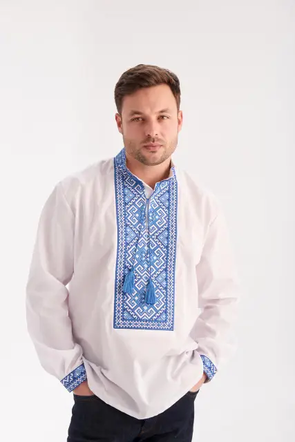

An embroidered Ukrainian shirt
A vyshyvanka is an embroidered shirt or blouse associated with Ukrainian dress. Examples are worn by men, women and children, and their appearance can vary greatly. The word is useful as an introduction to the garment, but it does not describe one single pattern, colour scheme or cut shared by every Ukrainian community. [1]
The shirt is also only one part of a wider clothing tradition. Historically, it could be worn with other garments and accessories that differed by place and occasion. Looking at an embroidered shirt in isolation can therefore miss part of its context: how it was made, who wore it and how it fitted into a complete outfit. [4]
Fabric, stitches and placement
Traditional embroidered shirts were made from fabrics such as linen or hemp cloth, with materials varying across places and periods. Embroidery often appeared around the neck opening, sleeves and cuffs. The relationship between the decoration and the construction of the shirt is part of its design, rather than the embroidery being a separate image added without reference to the garment. [1][2]
Cross-stitch is familiar to many people, but Ukrainian embroidery includes other techniques as well. Different stitches, thread colours and ways of arranging the work create different surfaces and patterns. A shirt with restrained embroidery and a shirt with densely decorated sleeves can both belong within this broader tradition; one visual formula does not cover every example. [1][2]
Regional variety and motifs
Geometric forms and plant-inspired designs appear in Ukrainian embroidery, with considerable regional and local variation. The combination of technique, fabric, colour and placement can be as important as the motif itself. This is why a museum record or a documented regional example can tell us more about a shirt than identifying a flower or diamond shape alone. [3]
Symbolic interpretations should be read in their particular context. A general chart assigning one fixed meaning to each colour or shape cannot, by itself, establish the history of an individual garment. When a particular meaning is claimed, it is useful to ask which region, period, community or source that interpretation comes from. [1][4]
A living clothing tradition
Embroidered shirts have formed part of festive and ceremonial dress, while the tradition has also changed over time. A garment’s use depends on its wearer and setting. It is therefore helpful to distinguish a historical shirt documented in a collection from a contemporary design inspired by older embroidery, rather than assuming that both represent exactly the same practice. [3][5]
Today the vyshyvanka is widely associated with Ukrainian cultural identity. It can be worn for public celebrations and family occasions, as well as incorporated into contemporary clothing. Ukrainian communities outside Ukraine also participate in this tradition. Its significance extends beyond the appearance of the stitching to the cultural connections expressed through wearing it. [4]
Understanding a modern example
For a modern shirt, the name alone does not establish its age, material or method of manufacture. Those details should come from the maker, a reliable label or a documented history. Asking about the fabric, embroidery technique and inspiration for the pattern is a practical way to understand the particular garment rather than relying only on a broad category name. [5]
The photographs in this article show clothing from the Mokosh Threads catalogue. They illustrate contemporary embroidered garments, rather than dated museum objects or a complete survey of Ukrainian regional dress. To learn more about a historical style, compare documented examples from collections and regional studies alongside the modern garment that first caught your attention. [4]

Sources
- Ivan Honchar Museum — collection record 3187 — retrieved 2026-11-22.
- Ivan Honchar Museum — collection record 2565 — retrieved 2026-11-22.
- Ivan Honchar Museum — collection record 2667 — retrieved 2026-11-22.
- Vyshyvanka Daily — Cherkasy region — retrieved 2026-11-22.
- Vyshyvanka Daily — Kirovohrad region — retrieved 2026-11-22.